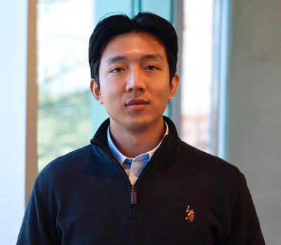
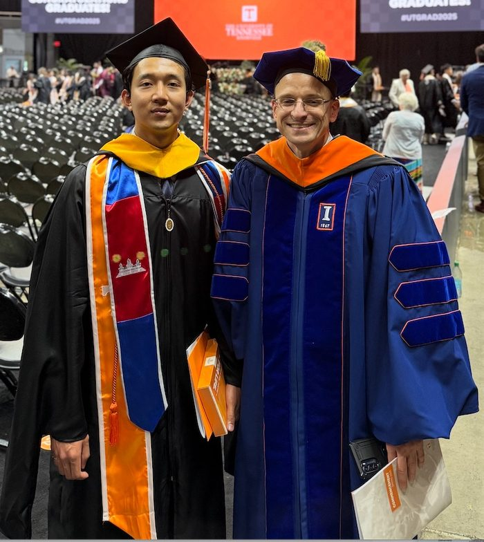
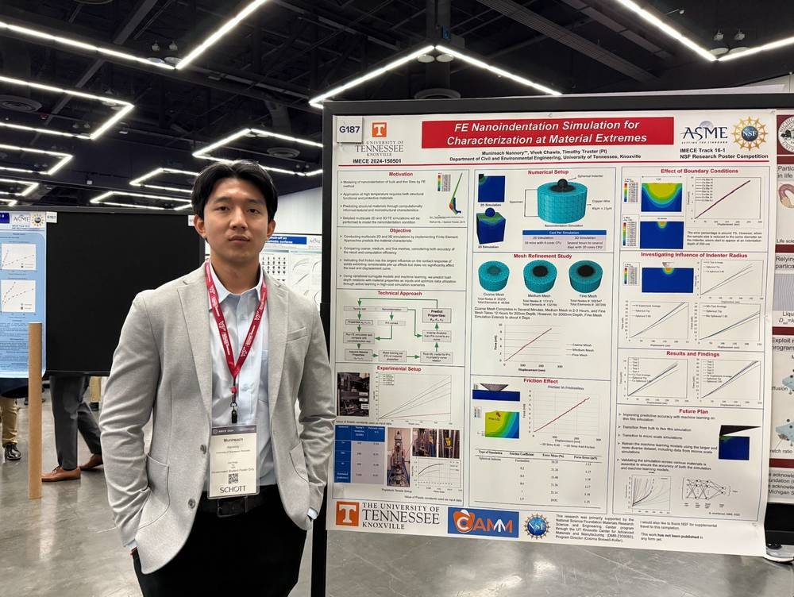
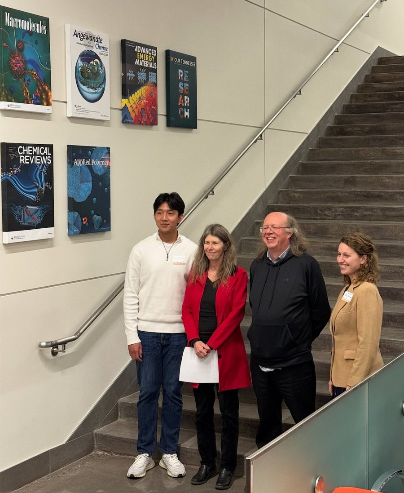
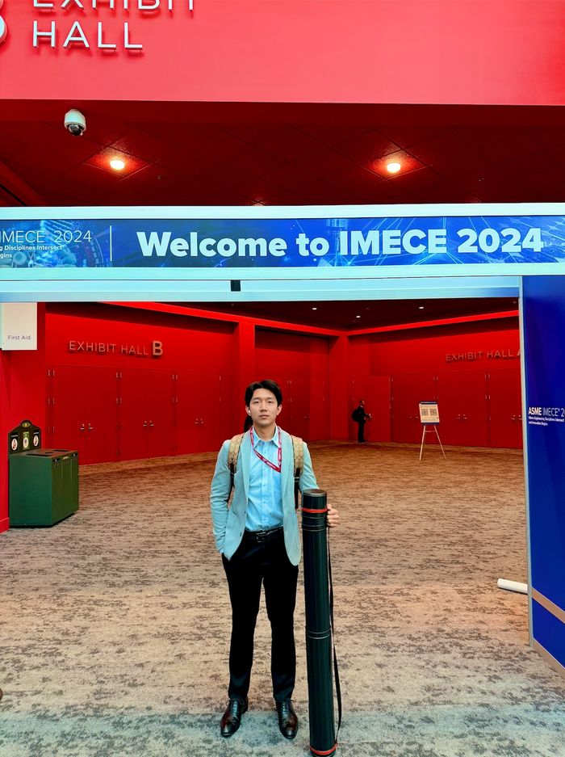
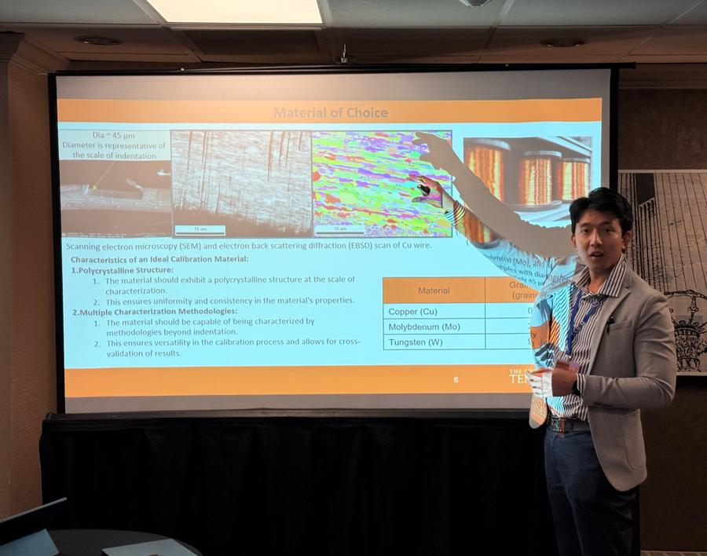
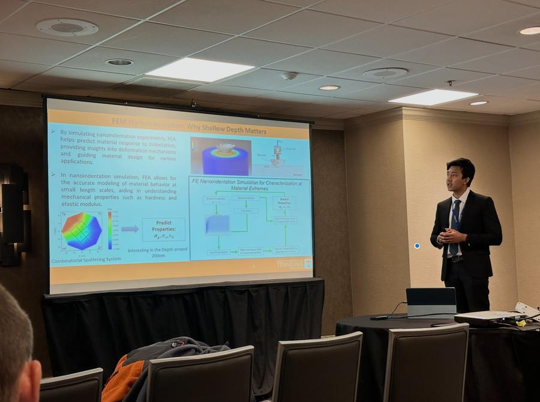
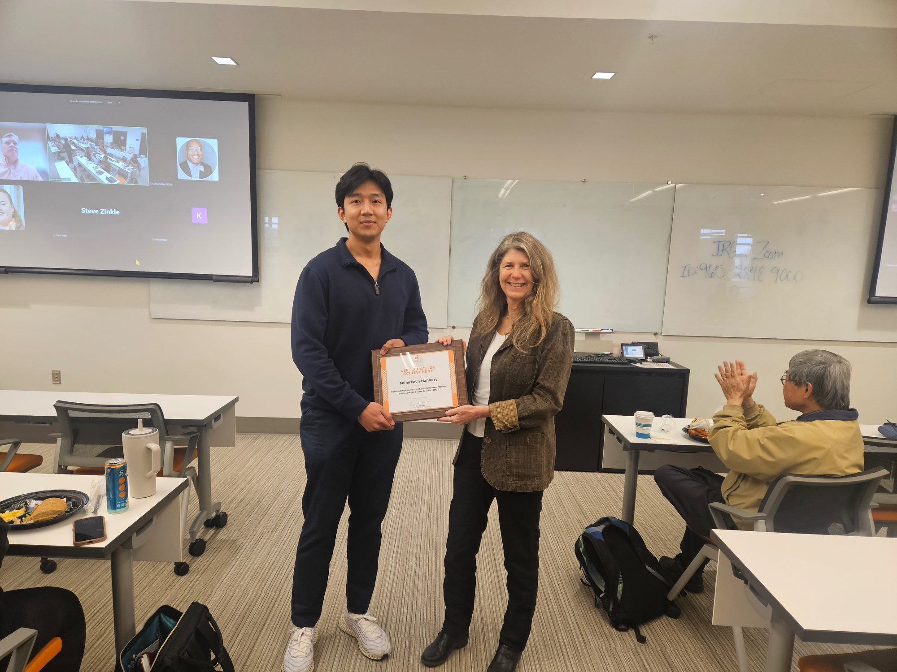

Substrate-effect correction
Quantifying and correcting substrate influence on measured thin-film properties, including depth-dependent error maps and practical indentation depth guidance.
Explore researchMunireach Nannory
CAE/FEA Engineer · Structural Engineer PhD Candidate, MS · Automation + MLCAE-focused PhD candidate with ~3 years of experience building nonlinear finite element models in Abaqus/CAE, including contact and elastic-plastic material response. Develops automation-first simulation workflows using Python and MATLAB on Linux and cluster environments.
Civil and Environmental Engineering (Structural Engineering) · University of Tennessee, Knoxville

A focused toolkit built around computational mechanics, simulation automation, and data-driven modeling.
Reliable computational tools at the intersection of finite element simulation and data-driven modeling for thin-film materials characterization.
Quantifying and correcting substrate influence on measured thin-film properties, including depth-dependent error maps and practical indentation depth guidance.
Explore researchPython-driven Abaqus/CAE pipelines for high-throughput parametric studies with elastic-plastic material models, automated post-processing, and reproducible V&V workflows.
Explore researchNeural networks and deep kernel learning to map load-depth curves back to intrinsic film properties. Surrogate modeling and active learning to improve data efficiency for high-cost simulations.
Explore researchMeasured spherical tip profiles from microscopy integrated directly into Abaqus 2D/3D contact models, reducing experiment-simulation mismatch from ~20% to below 5%.
Explore researchSelected work combining high-throughput simulation and machine learning for nanoindentation mechanics.
Automated high-throughput Abaqus/CAE nanoindentation simulations for thin-film/substrate systems across a wide range of property and geometry combinations. Results converted into depth-dependent error and regime maps that provide engineers with practical guidance on indentation depth and film thickness selection to minimize substrate influence and reduce costly re-testing.
An automated FEM + ML correction workflow compensates for substrate coupling and recovers bulk-equivalent properties from indentation responses across elastic-plastic property ranges. Traceable and reproducible pipelines align with industry expectations for verification and process control in materials development and manufacturing.
Measured spherical tip profiles from microscopy are incorporated directly into Abaqus 2D and 3D contact models, replacing idealized geometry assumptions. This reduces experiment-simulation mismatch from approximately 20% to below 5%, enabling reliable property extraction for thin films in electronics, coatings, aerospace, and energy applications.
Short-burst, high-intensity competitions building real scientific tools from scratch under time pressure.
Given raw AFM/MFM binary files from a combinatorial magnetic thin-film library, I built a complete image analysis pipeline from scratch under a 3-hour time constraint — extracting structural and magnetic features and mapping them spatially to identify composition-driven property gradients.
All authors listed as they appear in submissions. * denotes corresponding author.
Under review · 2025
Manuscript in preparation (submission in progress) · 2025
Manuscript in preparation (full draft complete) · 2025
Manuscript in preparation · 2026
Full list and preprints available on request.
Peer-reviewed conference contributions, university seminars, and poster presentations.
USNCCM 18 · Chicago, IL · July 20–24, 2025
Munireach Nannory, Vivek Chawla, Dayakar Penumadu, Timothy Truster. CAMM Travel Award recipient.
ASME IMECE 2024 · Portland, OR · November 17–21, 2024
Munireach Nannory, Vivek Chawla, Dayakar Penumadu, Timothy Truster. Paper No. IMECE2024-150501. Travel grant recipient.
TEAMS 2024 Tennessee Advanced Materials Summit · July 9–10, 2024
Munireach Nannory, Vivek Chawla, Dayakar Penumadu, Timothy Truster.
UTK-MRSEC Center for Advanced Materials and Manufacturing, University of Tennessee, Knoxville.
UTK-MRSEC · 2025
UTK-MRSEC · 2025
UTK-MRSEC · 2024
UTK-MRSEC · 2023
Advanced Materials and Manufacturing, UTK · 2026
Best Poster, IRG2 Poster Competition.
Advanced Materials and Manufacturing, UTK · 2025
Compared mesh refinement strategies, friction sensitivity, and variational surrogate models with active learning to improve data efficiency.
Advanced Materials and Manufacturing, UTK · 2023
Conference presentations, award moments, and research milestones.

MS graduation ceremony, University of Tennessee, Knoxville.

Presenting the FE Nanoindentation Simulation poster at ASME IMECE 2024.

Student of the Year, IRG 2 Graduate Research Assistant (Research Excellence), UTK-MRSEC, 2025.

ASME IMECE 2024, Portland, OR.

Presenting on spherical tip geometry identification for nanoindentation at USNCCM 18.

With advisor Prof. Timothy Truster at USNCCM 18, Chicago.

Certificate of Achievement for outstanding research and scholarly presentation at the student poster session.
Competitive honors and funding received during graduate training.
I am a PhD candidate in Civil and Environmental Engineering (Structural Engineering concentration) at the University of Tennessee, Knoxville, with a 3.97 GPA and about three years of experience building nonlinear finite element models in Abaqus/CAE.
My research focuses on making thin-film nanoindentation more reliable. I develop automated FEM workflows in Python, run high-throughput parametric studies on Linux and HPC clusters, and build machine learning pipelines that extract intrinsic film properties while correcting for substrate-driven error.
I enjoy correlating simulations to experimental results and building workflows that are traceable, reproducible, and easy for collaborators to use. I am interested in CAE, FEA, and structural simulation roles where automation and data-driven methods can improve engineering decisions.
PDF · Last updated February 2026
Structural Engineering · UTK · May 2024 – present · GPA 3.97
Structural Engineering · UTK · Aug 2023 – May 2025
Paññasastra University of Cambodia · 2016–2022 · Top-ranked scholar
Institute of Foreign Languages, Royal University of Phnom Penh · 2017–2021
UTK CEE · Aug 2023 – present
Nov 2024 – present · Automated Abaqus workflows, parametric studies, ML inversion
Jul 2024 – present · Depth-error maps, data-driven regime classification
Nov 2023 – 2025 · Microscopy-to-FEM, mismatch reduced to <5%
Abaqus/CAE, nonlinear FEM, contact mechanics, elastic-plastic modeling
Python, MATLAB, automation scripting, data pipelines, Linux/HPC, Git
Neural networks, deep kernel learning, uncertainty-aware modeling, active learning
For collaborations, speaking invitations, or roles in CAE and computational mechanics.